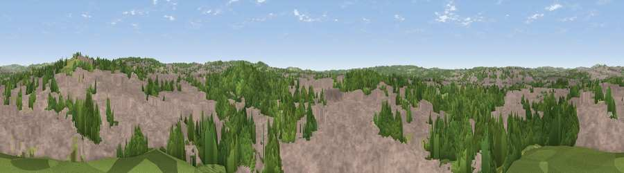

Glebedale Park
#38598 in England · top 76% of its area beats it · near FentonThe view, rendered

A 360° render of this exact spot computed from the terrain model, tree cover and land cover — summer colours, afternoon light, calibrated against photographs of famous viewpoints. Real trees, hedges and buildings will differ in detail.
The panorama
Grey silhouette: terrain skyline in each direction (720 bearings, Earth curvature and refraction included). Dashed green: skyline with trees (+15 m) and buildings (+8 m) as obstacles. Blue strip: how far the ground is visible on each bearing.
Where the view opens
Wedge length = distance to the farthest visible ground on that bearing (vegetation-aware). Rings at 10, 25 and 50 km.
What fills the view
65% built-up · 27% woodland · 7% grassland
Angular shares of the visible panorama (visual magnitude), not map area. Landscape diversity 0.37 (0–1 Shannon).
Key numbers
More beautiful places nearby
The staircase of upgrades: each row has a higher view potential than everything closer. Driving times are estimates from straight-line distance, calibrated against real road routing — check an actual route before setting out.
| Place | Direction | Drive | Score |
|---|---|---|---|
| Viewpoint near Meir Heath | SE · 4 km | ~9 min | 45.1 |
| Viewpoint near Meir Heath | SSE · 4 km | ~10 min | 48.6 |
| Viewpoint near Meir Heath | SE · 5 km | ~11 min | 54.7 |
| Forest Park Viewing Point | NNW · 5 km | ~11 min | 55.0 |
| Viewpoint near Werrington | NE · 5 km | ~12 min | 56.3 |
| Viewpoint near Bagnall | NNE · 6 km | ~13 min | 57.0 |
| Hanchurch Hills | SW · 7 km | ~14 min | 59.1 |
| Viewpoint near Beech | SW · 7 km | ~14 min | 62.1 |
52.99480, -2.15900 · source: dobih hill · position refined by local search. Computed location — check access rights before visiting.